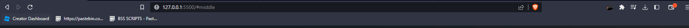
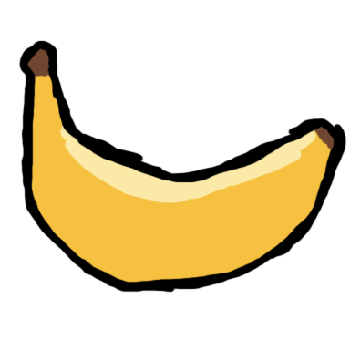

Used promo code: farha_cherry -100% off: $0.0/month
This process will start the 30 day trail, soo umm do it whenever you're ready lol
you should normally see a menu like this popping up:
drag this cool invite button to your bookmark!
30 Day Discord Invite Linkand voila you should be in the server after a couple of seconds, if not I failed being a good programmer lol
after the 30 days, buy channel subscription again and repeat the step to get back in server!
